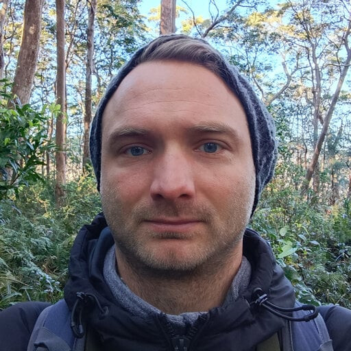
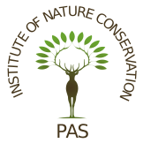

dr Arkadiusz Fröhlich
Naukowiec, przyrodnik, leśnik, zoolog i ekolog*
Instytut Ochrony Przyrody (IOP), Polska Akademia Nauk (PAN)
Wczytywanie…
Wybrane Publikacje
Wczytywanie…
Aktywność konferencyjna
Wczytywanie…
Popularyzacja
Wczytywanie…
Granty i wyróżnienia
Wczytywanie…
Kontakt
Contact

Instytut Ochrony Przyrody PAN
Institute of Nature Conservation PAS
al. Adama Mickiewicza 33, 31-120 Kraków, Polska
frohlich@iop.krakow.pl

Arkadiusz Fröhlich lab
Computative ecology without borders
www.frohlich.iop.krakow.pl